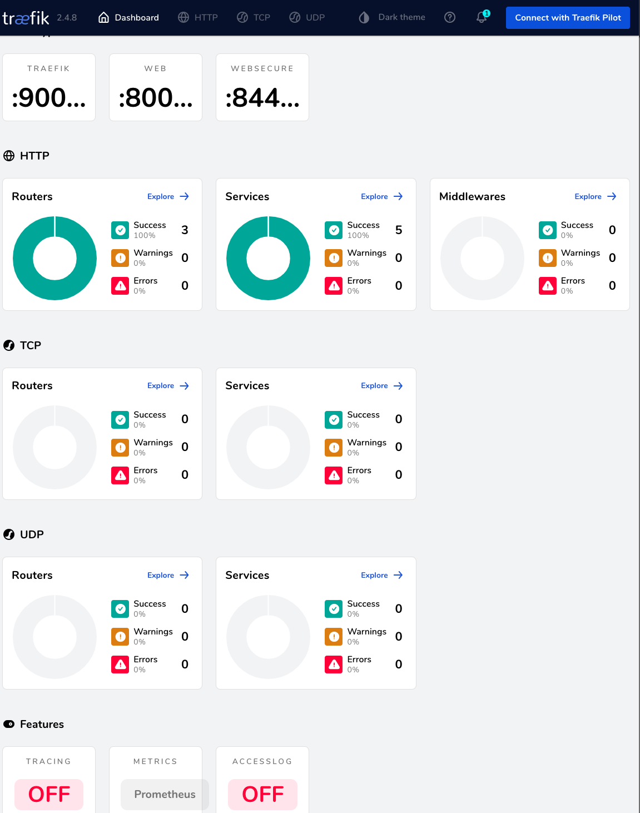
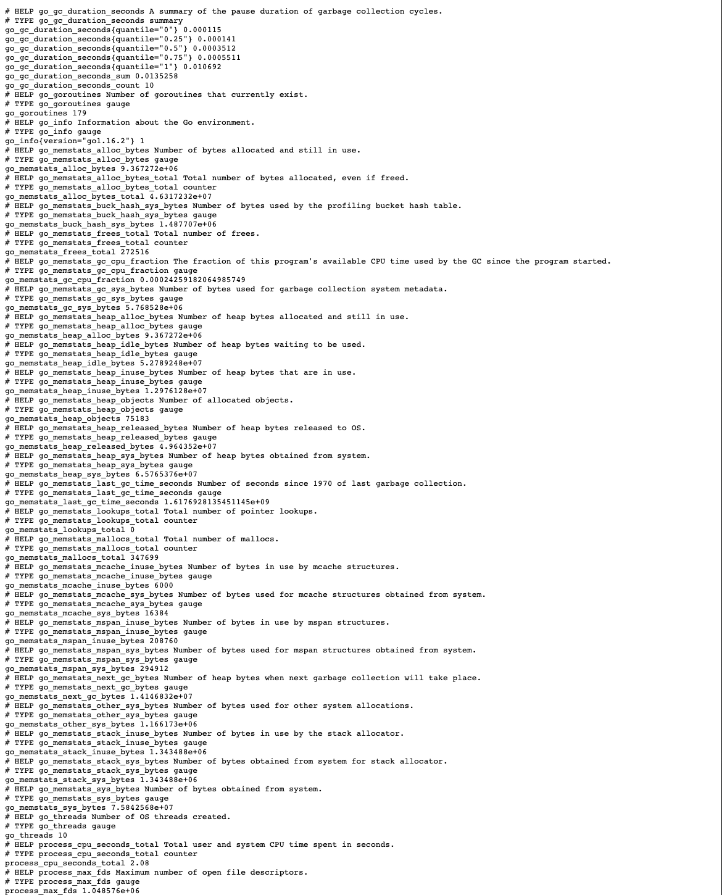
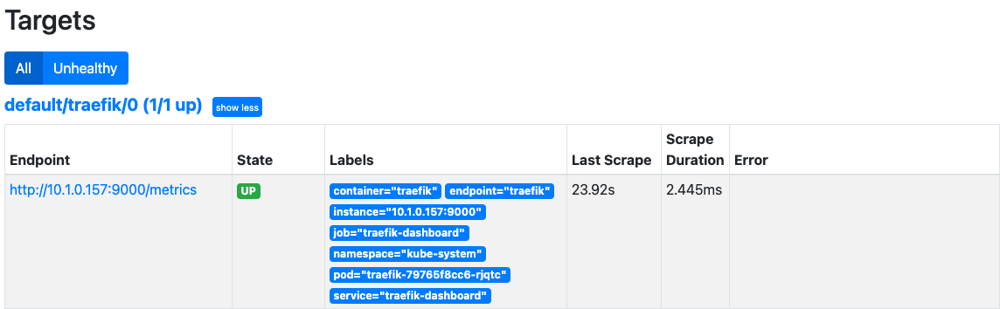
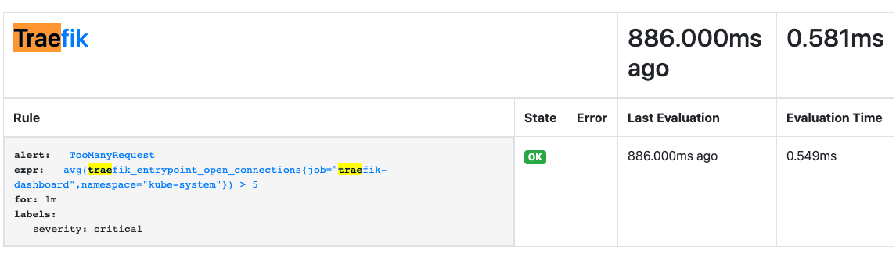
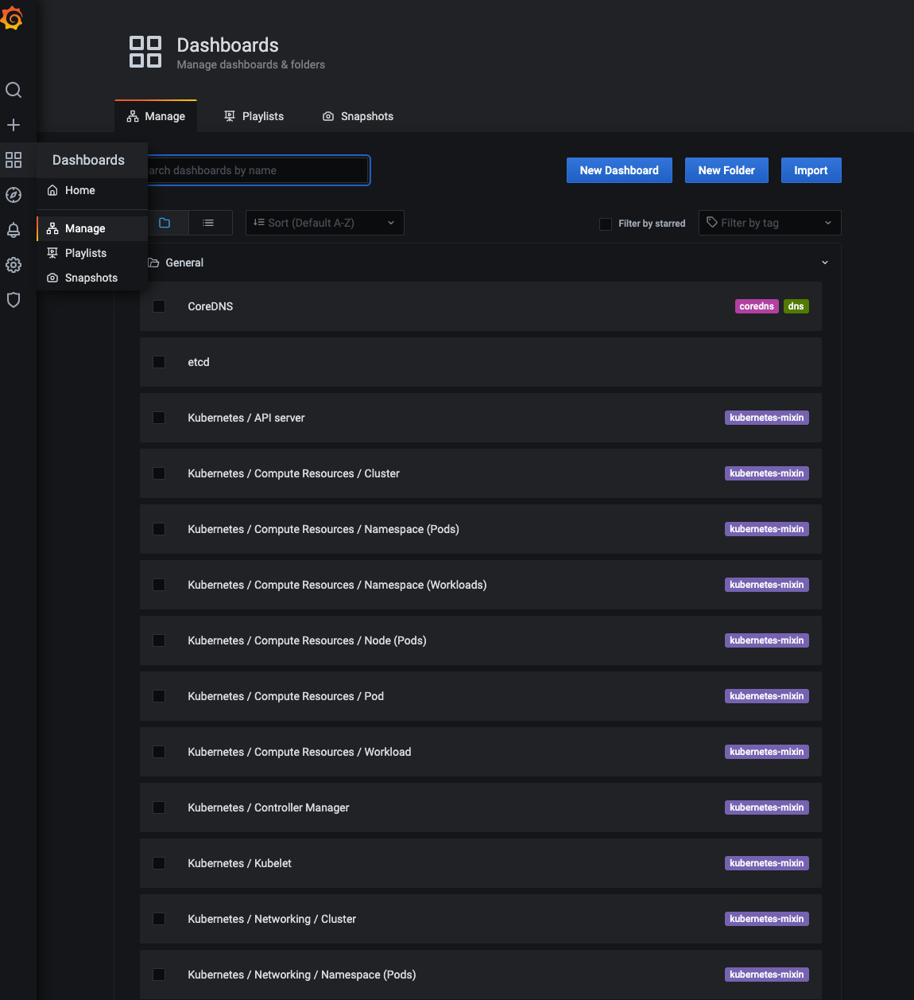
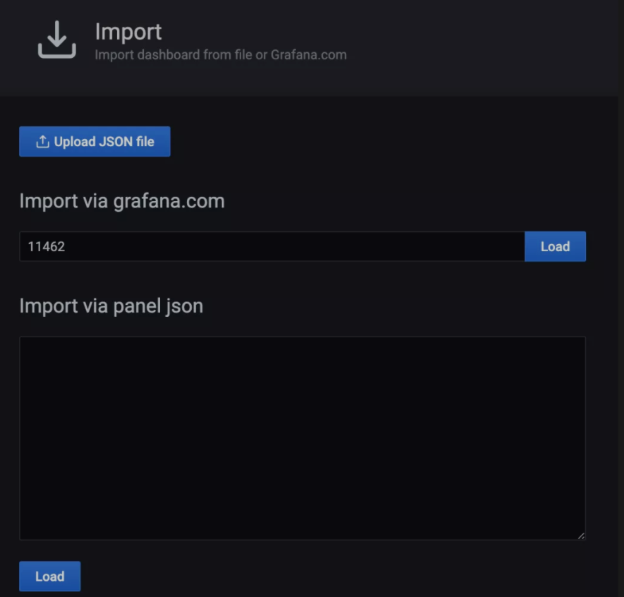
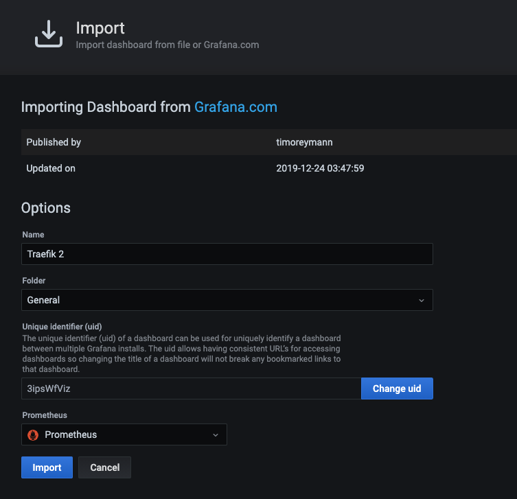
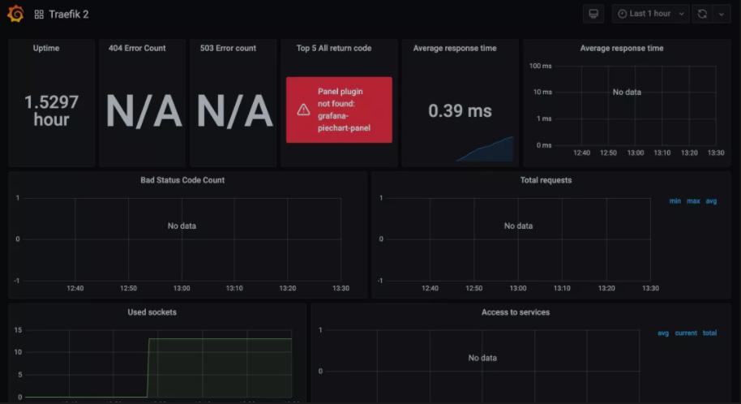
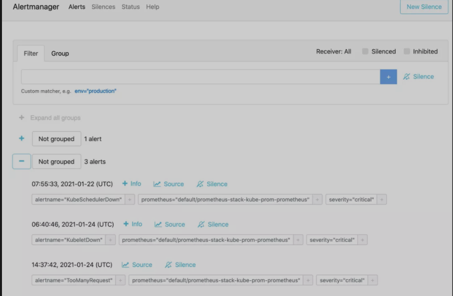

第十节 Traefik之使用Prometheus Operator进行监控报警2021
本文我们将探讨如何使用 Prometheus 和 Grafana 从 Traefik 提供的 metrics 指标中进行监控报警。
安装
首先你需要一个可以访问的 Kubernetes 集群。
1 部署 Traefik
这里我们使用更加简单的 Helm 方式来安装部署 Traefik。首先使用以下命令将 Traefik 添加到 Helm 的仓库中：
$ helm repo add traefik https://helm.traefik.io/traefik
$ helm repo update
然后我们可以在 kube-system 命名空间下来部署最新版本的 Traefik，在我们这个示例中，我们还需要确保在集群中启用了 Prometheus 指标，可以通过给 Helm 传递 --metrics.prometheus=true 标志来实现，这里我们将所有配置都放置到下面的 traefik-values.yaml 文件中：
traefik-values.yaml
# 简单使用 hostPort 模式
ports:
web:
port: 8000
hostPort: 80
websecure:
port: 8443
hostPort: 443
service:
enabled: false
# 不暴露 dashboard
dashboard:
# Enable the dashboard on Traefik
enable: true
ingressRoute: false
# ingressRoute:
# dashboard:
# enabled: false
# 开启 prometheus 监控指标
additionalArguments:
- --api.debug=true
- --metrics.prometheus=true
# kubeadm 安装的集群默认情况下master是有污点，需要容忍这个污点才可以部署
# 这里我们将 traefik 固定在 master 节点
tolerations:
- key: "node-role.kubernetes.io/master"
operator: "Equal"
effect: "NoSchedule"
nodeSelector:
kubernetes.io/hostname: "docker-desktop"
直接使用如下所示的命令安装：
$ helm install traefik traefik/traefik -n kube-system -f traefik-values.yaml
NAME: traefik
LAST DEPLOYED: Tue Apr 6 14:37:54 2021
NAMESPACE: kube-system
STATUS: deployed
REVISION: 1
TEST SUITE: None
由于我们默认没有为 Traefik 的 Dashboard 创建 IngressRoute 对象，这里我们使用 port-forward 来临时访问即可，当然首先需要为 Traefik Dashboard 创建一个 Service：
traefik-dashboard-service.yaml
# traefik-dashboard-service.yaml
apiVersion: v1
kind: Service
metadata:
name: traefik-dashboard
namespace: kube-system
labels:
app.kubernetes.io/instance: traefik
app.kubernetes.io/name: traefik-dashboard
spec:
type: ClusterIP
ports:
- name: traefik
port: 9000
targetPort: traefik
protocol: TCP
selector:
app.kubernetes.io/instance: traefik
app.kubernetes.io/name: traefik
$ kubectl get all -n kube-system | grep traefik
pod/traefik-79765f8cc6-rjqtc 1/1 Running 0 144m
service/traefik-dashboard ClusterIP 10.99.59.98 <none> 9000/TCP 169m
deployment.apps/traefik 1/1 1 1 144m
replicaset.apps/traefik-79765f8cc6 1 1 1 144m
直接创建，然后使用端口转发来访问：
$ kubectl apply -f traefik-dashboard-service.yaml
$ kubectl port-forward service/traefik-dashboard 9000:9000 -n kube-system
Forwarding from 127.0.0.1:9000 -> 9000
Forwarding from [::1]:9000 -> 9000
接下来我们就可以通过浏览器 http://127.0.0.1:9000/dashboard/（注意 URL 中的尾部斜杠，这是必须的）访问 Traefik Dashboard 了，现在应该可以看到在仪表板的 Features 部分启用了 Prometheus 指标。

此外我们还可以访问 http://127.0.0.1:9000/metrics 端点来查看 Traefik 提供的一些 metrics 指标：

部署 Prometheus Stack
helm repo add prometheus-community https://prometheus-community.github.io/helm-charts
helm repo update
上述资源库提供了许多 Chart，要查看完整的列表，你可以使用搜索命令：
$ helm search repo prometheus-community
NAME CHART VERSION APP VERSION DESCRIPTION
prometheus-community/alertmanager 0.8.0 v0.21.0 The Alertmanager handles alerts sent by client ...
prometheus-community/kube-prometheus-stack 14.5.0 0.46.0 kube-prometheus-stack collects Kubernetes manif...
prometheus-community/prometheus 13.6.0 2.24.0 Prometheus is a monitoring system and time seri...
prometheus-community/prometheus-adapter 2.12.1 v0.8.3 A Helm chart for k8s prometheus adapter
prometheus-community/prometheus-blackbox-exporter 4.10.2 0.18.0 Prometheus Blackbox Exporter
prometheus-community/prometheus-cloudwatch-expo... 0.14.1 0.10.0 A Helm chart for prometheus cloudwatch-exporter
prometheus-community/prometheus-consul-exporter 0.4.0 0.4.0 A Helm chart for the Prometheus Consul Exporter
prometheus-community/prometheus-couchdb-exporter 0.2.0 1.0 A Helm chart to export the metrics from couchdb...
prometheus-community/prometheus-druid-exporter 0.9.0 v0.8.0 Druid exporter to monitor druid metrics with Pr...
prometheus-community/prometheus-elasticsearch-e... 4.4.0 1.1.0 Elasticsearch stats exporter for Prometheus
prometheus-community/prometheus-kafka-exporter 1.0.0 v1.2.0 A Helm chart to export the metrics from Kafka i...
prometheus-community/prometheus-mongodb-exporter 2.8.1 v0.10.0 A Prometheus exporter for MongoDB metrics
prometheus-community/prometheus-mysql-exporter 1.1.0 v0.12.1 A Helm chart for prometheus mysql exporter with...
prometheus-community/prometheus-nats-exporter 2.6.0 0.7.0 A Helm chart for prometheus-nats-exporter
prometheus-community/prometheus-node-exporter 1.16.2 1.1.2 A Helm chart for prometheus node-exporter
prometheus-community/prometheus-operator 9.3.2 0.38.1 DEPRECATED - This chart will be renamed. See ht...
prometheus-community/prometheus-pingdom-exporter 2.3.2 20190610-1 A Helm chart for Prometheus Pingdom Exporter
这里我们需要安装的是 kube-prometheus-stack 这个 Chart，它会部署所需要的相关组件：
$ helm install kube-prom prometheus-community/kube-prometheus-stack -n monitoring
2 配置 Traefik 监控
Prometheus Operator 提供了 ServiceMonitor 这个 CRD 来配置监控指标的采集，这里我们定义一个如下所示的对象：
traefik-service-monitor.yaml
# traefik-service-monitor.yaml
apiVersion: monitoring.coreos.com/v1
kind: ServiceMonitor
metadata:
name: traefik
namespace: default
labels:
app: traefik
release: prometheus-stack
spec:
jobLabel: traefik-metrics
selector:
matchLabels:
app.kubernetes.io/instance: traefik
app.kubernetes.io/name: traefik-dashboard
namespaceSelector:
matchNames:
- kube-system
endpoints:
- port: traefik
path: /metrics
根据上面的配置，Prometheus 将获取 traefik-dashboard 服务的 /metrics 端点。
主要注意的是 traefik-dashboard 服务是在 kube-system 命名空间中创建的，而 ServiceMonitor 则部署在默认的 default 命名空间中，所以这里面我们使用了 namespaceSelector 进行命名空间匹配。
接下来我们可以来验证一下 Prometheus 是否已经开始抓取 Traefik 的指标了。

3 配置 Traefik 报警
接下来我们还可以添加一个报警规则，当条件匹配的时候会触发报警，同样 Prometheus Operator 也提供了一个名为 PrometheusRule 的 CRD 对象来配置报警规则：
traefik-rules.yaml
# traefik-rules.yaml
apiVersion: monitoring.coreos.com/v1
kind: PrometheusRule
metadata:
annotations:
meta.helm.sh/release-name: kube-prom
meta.helm.sh/release-namespace: monitoring
labels:
app: kube-prometheus-stack
release: kube-prom
name: traefik-alert-rules
namespace: monitoring
spec:
groups:
- name: Traefik
rules:
- alert: TooManyRequest
expr: avg(traefik_entrypoint_open_connections{job="traefik-dashboard",namespace="kube-system"})
> 5
for: 1m
labels:
severity: critical
这里我们定义了一个规则：如果1分钟内有超过5个 open connections 机会触发一个 TooManyRequest 报警，直接创建这个对象即可：
$ kubectl apply -f traefik-rules.yaml
注意： PrometheusRule的annotations&labels
可以借鉴其它已经运行的rule
kubectl get PrometheusRule kube-prom-kube-prometheus-prometheus-operator -n monitoring -oyaml
annotations:
meta.helm.sh/release-name: kube-prom
meta.helm.sh/release-namespace: monitoring
labels:
app: kube-prometheus-stack
release: kube-prom
name: traefik-alert-rules
namespace: monitoring
查看PrometheusRule是否安装成功
kubectl exec prometheus-kube-prom-kube-prometheus-prometheus-0 -n monitoring -it sh
cd /etc/prometheus/rules/prometheus-kube-prom-kube-prometheus-prometheus-rulefiles-0
$ ls -la
...
monitoring-traefik-alert-rules.yaml
创建完成后正常在 Promethues 的 Dashboard 下的 Status > Rules 页面就可以看到对应的报警规则：

4 Grafana 配置
前面使用 kube-prometheus-stack 这个 Helm Chart 部署的时候就已经部署上了 Grafana，接下来我们可以为 Traefik 的监控指标配置一个 Dashboard，同样首先我们使用端口转发的方式来访问 Grafana：
kubectl port-forward svc/kube-prom-grafana 10080:80 -n monitoring
然后访问 Grafana GUI（http://localhost:10080）时，它会要求输入登录名和密码，默认的登录用户名是 admin，密码是 prom-operator，密码可以从名为 prometheus-operator-grafana 的 Kubernetes Secret 对象中获取。
当然我们可以自己为 Traefik 自定义一个 Dashboard，也可以从 Grafana 的官方社区中导入一个合适的即可，点击左侧导航栏上的四方形图标，导航到 Dashboards > Manage，即可添加仪表盘。

点击右上角的 Import 按钮，输入 11462 作为 Dashboard 的 ID，对应用户 timoreymann 贡献的 Traefik 2 仪表盘。

点击 Load 后，你应该看到导入的仪表盘的相关信息。

在最下面有一个下拉菜单，选择 Prometheus 数据源，然后点击 Import，即可生成如下所示的 Dashboard。

5 测试
现在，Traefik 已经开始工作了，并且指标也被 Prometheus 和 Grafana 获取到了，接下来我们需要使用一个应用程序来测试。这里我们部署 HTTPBin 服务，它提供了许多端点，可用于模拟不同类型的用户流量。对应的资源清单文件如下所示：
# httpbin.yaml
apiVersion: apps/v1
kind: Deployment
metadata:
name: httpbin
labels:
app: httpbin
spec:
replicas: 1
selector:
matchLabels:
app: httpbin
template:
metadata:
labels:
app: httpbin
spec:
containers:
- image: kennethreitz/httpbin
name: httpbin
ports:
- containerPort: 80
---
apiVersion: v1
kind: Service
metadata:
name: httpbin
spec:
ports:
- name: http
port: 8000
targetPort: 80
selector:
app: httpbin
---
apiVersion: traefik.containo.us/v1alpha1
kind: IngressRoute
metadata:
name: httpbin
spec:
entryPoints:
- web
routes:
- match: Host(`httpbin.local`)
kind: Rule
services:
- name: httpbin
port: 8000
```
直接创建上面的资源清单：
$ kubectl apply -f httpbin.yaml deployment.apps/httpbin created service/httpbin created ingressroute.traefik.containo.us/httpbin created
httpbin 路由会匹配 `httpbin.local` 的主机名，然后将请求转发给 httpbin Service：
$ curl -I http://192.168.65.4 -H "host:httpbin.local" HTTP/1.1 200 OK Access-Control-Allow-Credentials: true Access-Control-Allow-Origin: * Content-Length: 9593 Content-Type: text/html; charset=utf-8 Date: Mon, 05 Apr 2021 05:43:16 GMT Server: gunicorn/19.9.0
我们这里部署的 Traefik 使用的是 hostPort 模式，固定到 master 节点上面的，这里的 IP 地址 192.168.65.4 就是 master 节点的 IP 地址。
接下来我们使用 ab 来访问 HTTPBin 服务模拟一些流量，这些请求会产生对应的指标，执行以下脚本：
$ ab -c 5 -n 10000 -m PATCH -H "host:httpbin.local" -H "accept: application/json" http://192.168.31.75/patch $ ab -c 5 -n 10000 -m GET -H "host:httpbin.local" -H "accept: application/json" http://192.168.31.75/get $ ab -c 5 -n 10000 -m POST -H "host:httpbin.local" -H "accept: application/json" http://192.168.31.75/post
正常一段时间后再去查看 Grafana 的 Dashboard 可以看到显示了更多的信息：
包括：正常运行的时间、平均响应时间、请求总数、基于 HTTP 方法和服务的请求计数等。

最后，当我们测试应用流量时，`Prometheus` 可能会触发报警，之前创建的 `TooManyRequest` 报警将显示在 Alertmanager 仪表板上，然后可以自己根据需要配置接收报警信息的 Receiver 即可。
$ kubectl port-forward service/prometheus-stack-kube-prom-alertmanager 9093:9093 Forwarding from 127.0.0.1:9093 -> 9093 ```

6 总结
在本文中，我们已经看到了将 Traefik 连接到 Prometheus 和 Grafana 以从 Traefik 指标中创建可视化的过程是非常简单的。当熟悉这些工具后，我们也可以根据实际需求创建一些 Dashboard，暴露你的环境的一些关键数据。